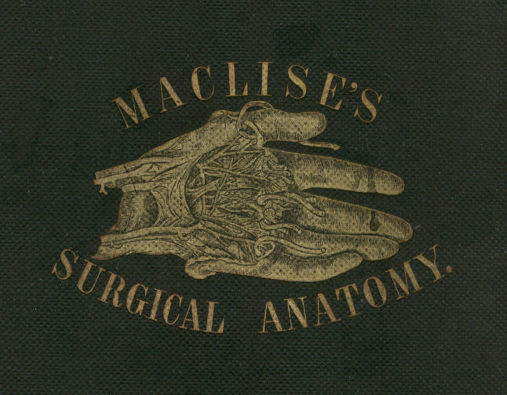
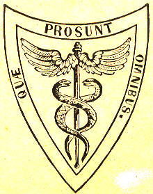
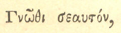

[Transcriber's Notes]
Thanks to Carol Presher of Timeless Antiques, Valley, Alabama, for
lending the original book for this production. The 140 year old binding
had disintegrated, but the paper and printing was in amazingly good
condition, particularly the multicolor images.
Thanks also to the Mayo Clinic. This book has increased my appreciation
of their skilled care of my case by showing the many ways that things
could go wrong.
Footnotes are indicated by "[Footnote]" where they appear in the text.
The body of the footnote appears immediately following the complete
paragraph. If more than one footnote appears in the same paragraph, they
are numbered.
A few obvious misspellings have been corrected. Several cases of
alternate spelling of the same(?) word have not been modified.
Pages have been reorganized to avoid splitting sentences and paragraphs.
Each image is inserted immediately following its description.
Some of the plates did not fit on the scanner and were captured as two
separate images. The merged images show some artifacts of the merge
process due to slightly different lighting of the page. The contrast and
gamma values have been adjusted to restore the images.
To view a figure while reading the corresponding text, try opening the
file in two windows. For some viewers, you may have to copy the file and
open both the copy and the original.
In this HTML format the images have been resized to fit on smaller
displays. Each image is also a link to the original size version.
Click on the image to see the original. Click the Browser's
BACK button to return to the text.
Transciber's Glossary
[End Transcriber's Notes]

SURGICAL ANATOMY
BY
JOSEPH MACLISE
FELLOW OF THE ROYAL COLLEGE OF SURGEONS.
WITH SIXTY-EIGHT COLOURED PLATES.
PHILADELPHIA:
BLANCHARD AND LEA.
1859.

[Stamped by owner: John D. Warren, Physician & Surgeon.]
I INSCRIBE THIS WORK TO THE GENTLEMEN
WITH WHOM AS A FELLOW-STUDENT I WAS ASSOCIATED AT THE
London University
College:
AND IN AN ESPECIAL MANNER, IN THEIR NAME AS WELL AS MY OWN,
I AVAIL MYSELF OF THE OPPORTUNITY TO RECORD, ON THIS PAGE,
ALBEIT IN CHARACTERS LESS IMPRESSIVE THAN THOSE WHICH ARE
WRITTEN ON THE LIVING TABLET OF MEMORY,
THE DEBT OF GRATITUDE WHICH WE OWE TO THE LATE
SAMUEL COOPER, F.R.S., AND ROBERT LISTON, F.R.S.,
TWO AMONG THE MANY DISTINGUISHED PROFESSORS OF THAT
INSTITUTION, WHOSE PUPILS WE HAVE BEEN,
AND FROM WHOM WE INHERIT THAT BETTER POSSESSION THAN LIFE
ITSELF, AN ASPIRATION FOR THE LIGHT OF SCIENCE.
JOSEPH MACLISE.
PREFACE.
The object of this work is to present to the student of medicine and the
practitioner removed from the schools, a series of dissections
demonstrative of the relative anatomy of the principal regions of the
human body. Whatever title may most fittingly apply to a work with this
intent, whether it had better be styled surgical or medical, regional,
relative, descriptive, or topographical anatomy, will matter little,
provided its more salient or prominent character be manifested in its
own form and feature. The work, as I have designed it, will itself show
that my intent has been to base the practical upon the anatomical, and
to unite these wherever a mutual dependence was apparent.
That department of anatomical research to which the name topographical
strictly applies, as confining itself to the mere account of the form
and relative location of the several organs comprising the animal body,
is almost wholly isolated from the main questions of physiological and
transcendental interest, and cannot, therefore, be supposed to speak in
those comprehensive views which anatomy, taken in its widest
signification as a science, necessarily includes. While the anatomist
contents himself with describing the form and position of organs as they
appear exposed, layer after layer, by his dissecting instruments, he
does not pretend to soar any higher in the region of science than the
humble level of other mechanical arts, which merely appreciate the
fitting arrangement of things relative to one another, and combinative
to the whole design of the form or machine of whatever species this may
be, whether organic or inorganic. The descriptive anatomist of the human
body aims at no higher walk in science than this, and hence his
nomenclature is, as it is, a barbarous jargon of words, barren of all
truthful signification, inconsonant with nature, and blindly
irrespective of the cognitio certa
ex principiis certis exorta.
Still, however, this anatomy of form, although so much requiring
purification of its nomenclature, in order to clothe it in the high
reaching dignity of a science, does not disturb the medical or surgical
practitioner, so far as their wants
are concerned. Although it may, and
actually does, trammel the votary who aspires to the higher
generalizations and the development of a law of formation, yet, as this
is not the object of the surgical anatomist, the nomenclature, such as
it is, will answer conveniently enough the present purpose.
The anatomy of the human form, contemplated in reference to that of all
other species of animals to which it bears comparison, constitutes the
study of the comparative anatomist, and, as such, establishes the
science in its full intent. But the anatomy of the human figure,
considered as a species, per se,
is confessedly the humblest walk of the
understanding in a subject which, as anatomy, is relationary, and
branches far and wide through all the domain of an animal kingdom. While
restricted to the study of the isolated human species, the cramped
judgment wastes in such narrow confine; whereas, in the expansive gaze
over all allying and allied species, the intellect bodies forth to its
vision the full appointed form of natural majesty; and after having
experienced the manifold analogies and differentials of the many, is
thereby enabled, when it returns to the study of the one, to view this
one of human type under
manifold points of interest, to the appreciation
of which the understanding never wakens otherwise. If it did not happen
that the study of the human form (confined to itself) had some practical
bearing, such study could not deserve the name of anatomical, while
anatomical means comparative, and whilst comparison implies inductive
reasoning.
However, practical anatomy, such as it is, is concerned with an exact
knowledge of the relationship of organs as they stand in reference to
each other, and to the whole design of which these organs are the
integral parts. The figure, the capacity, and the contents of the
thoracic and abdominal cavities, become a study of not more urgent
concernment to the physician, than are the regions named cervical,
axillary, inguinal, &c., to the surgeon. He who would combine both
modes
of a relationary practice, such as that of medicine and surgery, should
be well acquainted with the form and structures characteristic of all
regions of the human body; and it may be doubted whether he who pursues
either mode of practice, wholly exclusive of the other, can do so with
honest purpose and large range of understanding, if he be not equally
well acquainted with the subject matter of both. It is, in fact, more
triflingly fashionable than soundly reasonable, to seek to define the
line of demarcation between the special callings of medicine and
surgery, for it will ever be as vain an endeavour to separate the one
from the other without extinguishing the vitality of both, as it would
be to sunder the trunk from the head, and give to each a separate living
existence. The necessary division of labour is the only reason that can
be advanced in excuse of specialisms; but it will be readily agreed to,
that that practitioner who has first laid within himself the foundation
of a general knowledge of matters relationary to his subject, will
always be found to pursue the speciality according to the light of
reason and science.
Anatomy--the  the knowledge
based on principle--is the
foundation of the curative art, cultivated as a science in all its
branchings; and comparison is the nurse of reason, which we are fain to
make our guide in bringing the practical to bear productively. The human
body, in a state of health, is the standard whereunto we compare the
same body in a state of disease. The knowledge of the latter can only
exist by the knowledge of the former, and by the comparison of both.
Comparison may be fairly termed the pioneer to all certain knowledge. It
is a potent instrument--the only one, in the hands of the pathologist,
as well as in those of the philosophic generalizer of anatomical facts,
gathered through the extended survey of an animal kingdom. We best
recognise the condition of a dislocated joint after we have become well
acquainted with the contour of its normal state; all abnormal conditions
are best understood by a knowledge of what we know to be normal
character. Every anatomist is a comparer, in a greater or lesser degree;
and he is the greatest anatomist who compares the most generally.
Impressed with this belief, I have laid particular emphasis on imitating
the character of the normal form of the human figure, taken as a whole;
that of its several regions as parts of this whole, and that of the
various organs (contained within those regions) as its integrals or
elements. And in order to present this subject of relative anatomy in
more vivid reality to the understanding of the student, I have chosen
the medium of illustrating by figure rather than by that of written
language, which latter, taken alone, is almost impotent in a study of
this nature.
It is wholly impossible for anyone to describe form in words without the
aid of figures. Even the mathematical strength of Euclid would avail
nothing, if shorn of his diagrams. The professorial robe is impotent
without its diagrams. Anatomy being a science existing by demonstration,
(for as much as form in its actuality is the language of nature,) must
be discoursed of by the instrumentality of figure.
An anatomical illustration enters the understanding straight-forward in
a direct passage, and is almost independent of the aid of written
language. A picture of form is a proposition which solves itself. It is
an axiom encompassed in a frame-work of self-evident truth. The best
substitute for Nature herself, upon which to teach the knowledge of her,
is an exact representation of her form.
Every surgical anatomist will (if he examine himself) perceive that,
previously to undertaking the performance of an operation upon the
living body, he stands reassured and self-reliant in that degree in
which he is capable of conjuring up before his mental vision a distinct
picture of his subject. Mr. Liston could draw the same anatomical
picture mentally which Sir Charles Bell's handicraft could draw in
reality of form and figure. Scarpa was his own draughtsman.
If there may be any novelty now-a-days possible to be recognised upon
the out-trodden track of human relative anatomy, it can only be in
truthful and well-planned illustration. Under this view alone may the
anatomist plead an excuse for reiterating a theme which the beautiful
works of Cowper, Haller, Hunter, Scarpa, Soemmering, and others, have
dealt out so respectably. Except the human anatomist turns now to what
he terms the practical ends of his study, and marshals his little
knowledge to bear upon those ends, one may proclaim anthropotomy to have
worn itself out. Dissection can do no more, except to repeat
Cruveilhier. And that which Cruveilhier has done for human anatomy,
Muller has completed for the physiological interpretation of human
anatomy; Burdach has philosophised, and Magendie has experimented to the
full upon this theme, so far as it would permit. All have pushed the
subject to its furthest limits, in one aspect of view. The narrow circle
is footworn. All the needful facts are long since gathered, sown, and
known. We have been seekers after those facts from the days of
Aristotle. Are we to put off the day of attempting interpretation for
three thousand years more, to allow the human physiologist time to slice
the brain into more delicate atoms than he has done hitherto, in order
to coin more names, and swell the dictionary? No! The work must now be
retrospective, if we would render true knowledge progressive. It is not
a list of new and disjointed facts that Science at present thirsts for;
but she is impressed with the conviction that her wants can alone be
supplied by the creation of a new and truthful theory,--a generalization
which the facts already known are sufficient to supply, if they were
well ordered according to their natural relationship and mutual
dependence. "Le temps viendra peut-etre," says Fontenelle, "que 1'on
joindra en un corps regulier ces membres epars; et, s'ils sont tels
qu'on le souhaite, ils s'assembleront en quelque sorte d'eux-memes.
Plusieurs verites separees, des qu'elles sont en assez grand nombre,
offrent si vivement a 1'esprit leurs rapports et leur mutuelle
dependance, qu'il semble qu'apres les avoir detachees par une espece de
violence les unes des autres, elles cherchent naturellement a se
reunir."--(Preface sur l'utilite des Sciences, &c.)
The comparison of facts already known must henceforward be the scalpel
which we are to take in hand. We must return by the same road on which
we set out, and reexamine the things and phenomena which, as novices, we
passed by too lightly. The travelled experience may now sit down and
contemplate.
That which I have said and proved elsewhere in respect to the skeleton
system may, with equal truth, be remarked of the nervous system--namely,
that the question is not in how far does the limit of diversity extend
through the condition of an evidently common analogy, but by what rule
or law the uniform ens is rendered the diverse entity? The womb of
anatomical science is pregnant of the true interpretation of the law of
unity in variety; but the
question is of longer duration than was the
life of the progenitor. Though Aristotle and Linnaeus, and Buffon and
Cuvier, and Geoffroy St. Hilaire and Leibnitz, and Gothe, have lived and
spoken, yet the present state of knowledge proclaims the Newton of
physiology to be as yet unborn. The iron scalpel has already made
acquaintance with not only the greater parts, but even with the
infinitesimals of the human body; and reason, confined to this narrow
range of a subject, perceives herself to be imprisoned, and quenches her
guiding light in despair. Originality has outlived itself; and discovery
is a long-forgotten enterprise, except as pursued in the microcosm on
the field of the microscope, which, it must be confessed, has drawn
forth demonstrations only commensurate in importance with the magnitude
of the littleness there seen.
The subject of our study, whichever it happen to be, may appear
exhausted of all interest, and the promise of valuable novelty, owing to
two reasons:--It may be, like descriptive human anatomy, so cold, poor
and sterile in its own nature, and so barren of product, that it will be
impossible for even the genius of Promethean fire to warm it; or else,
like existing physiology, the very point of view from which the mental
eye surveys the theme, will blight the fair prospect of truth, distort
induction, and clog up the paces of ratiocination. The physiologist of
the present day is too little of a comparative anatomist, and far too
closely enveloped in the absurd jargon of the anthropotomist, ever to
hope to reveal any great truth for science, and dispel the mists which
still hang over the phenomena of the nervous system. He is steeped too
deeply in the base nomenclature of the antique school, and too indolent
to question the import of Pons, Commissure, Island, Taenia, Nates,
Testes, Cornu, Hippocamp, Thalamus, Vermes, Arbor Vitro, Respiratory
Tract, Ganglia of Increase, and all such phrase of unmeaning sound, ever
to be productive of lucid interpretation of the cerebro-spinal ens.
Custom alone sanctions his use of such names; but
"Custom calls him to it!
What custom wills; should custom always do it,
The dust on antique time would lie unswept,
And mountainous error be too highly heaped,
For truth to overpeer."
Of the illustrations of this work I may state, in guarantee of their
anatomical accuracy, that they have been made by myself from my own
dissections, first planned at the London University College, and
afterwards realised at the Ecole Pratique, and School of Anatomy
adjoining the Hospital La Pitie, Paris, a few years since. As far as the
subject of relative anatomy could admit of novel treatment, rigidly
confined to facts unalterable, I have endeavoured to give it.
The unbroken surface of the human figure is as a map to the surgeon,
explanatory of the anatomy arranged beneath; and I have therefore left
appended to the dissected regions as much of the undissected as was
necessary. My object was to indicate the interior through the
superficies, and thereby illustrate the whole living body which concerns
surgery, through its dissected dead counterfeit. We dissect the dead
animal body in order to furnish the memory with as clear an account of
the structure contained in its living representative, which we are not
allowed to analyse, as if this latter were perfectly translucent, and
directly demonstrative of its component parts.
J. M
TABLE OF CONTENTS.
PREFACE
INTRODUCTORY TO THE STUDY OF ANATOMY AS A SCIENCE.
COMMENTARY ON PLATES 1 & 2
THE FORM OF THE THORAX, AND THE RELATIVE POSITION OF ITS
CONTAINED PARTS--THE LUNGS, HEART, AND LARGER BLOOD VESSELS.
The structure, mechanism, and respiratory motions of the thoracic
apparatus. Its varieties in form, according to age and sex. Its
deformities. Applications to the study of physical diagnosis.
COMMENTARY ON PLATES 3 & 4
THE SURGICAL FORM OF THE SUPERFICIAL, CERVICAL, AND FACIAL
REGIONS, AND THE RELATIVE POSITION OF THE PRINCIPAL BLOOD
VESSELS, NERVES, ETC.
The cervical surgical triangles considered in reference to the position
of the subclavian and carotid vessels, &c. Venesection in respect
to the
external jugular vein. Anatomical reasons for avoiding transverse
incisions in the neck. The parts endangered in surgical operations on
the parotid and submaxillary glands, &c.
COMMENTARY ON PLATES 5 & 6
THE SURGICAL FORM OF THE DEEP CERVICAL AND FACIAL REGIONS,
AND THE RELATIVE POSITION OF THE PRINCIPAL BLOOD VESSELS,
NERVES, ETC.
The course of the carotid and subclavian vessels in reference to each
other, to the surface, and to their respective surgical triangles.
Differences in the form of the neck in individuals of different age and
sex. Special relations of the vessels. Physiological remarks on the
carotid artery. Peculiarities in the relative position of the subclavian
artery.
COMMENTARY ON PLATES 7 & 8
THE SURGICAL DISSECTION OF THE SUBCLAVIAN AND CAROTID
REGIONS, AND THE RELATIVE ANATOMY OF THEIR CONTENTS.
General observations. Abnormal complications of the carotid and
subclavian arteries. Relative position of the vessels liable to change
by the motions of the head and shoulder. Necessity for a fixed surgical
position in operations affecting these vessels. The operations for tying
the carotid or the subclavian at different situations in cases of
aneurism, &c. The operation for tying the innominate artery.
Reasons of
the unfavourable results of this proceeding.
COMMENTARY ON PLATES 9 & 10
THE SURGICAL DISSECTION OF THE EPISTERNAL OR TRACHEAL
REGION, AND THE RELATIVE POSITION OF ITS MAIN BLOOD VESSELS,
NERVES, ETC.
Varieties of the primary aortic branches explained by the law of
metamorphosis. The structures at the median line of the neck. The
operations of tracheotomy and laryngotomy in the child and adult, The
right and left brachio-cephalic arteries and their varieties considered
surgically.
COMMENTARY ON PLATES 11 & 12
THE SURGICAL DISSECTION OF THE AXILLARY AND BRACHIAL
REGIONS, DISPLAYING THE RELATIVE POSITION OF THEIR CONTAINED PARTS.
The operation for tying the axillary artery. Remarks on fractures of the
clavicle and dislocation of the humerus in reference to the axillary
vessels. The operation for tying the brachial artery near the axilla.
Mode of compressing this vessel against the humerus.
COMMENTARY ON PLATES 13 & 14
THE SURGICAL FORMS OF THE MALE AND FEMALE AXILLAE
COMPARED.
The mammary and axillary glands in health and disease. Excision of these
glands. Axillary abscess. General surgical observations on the axilla.
COMMENTARY ON PLATES 15 & 16
THE SURGICAL DISSECTION OF THE BEND OF THE ELBOW AND THE
FOREARM, SHOWING THE RELATIVE POSITION OF THE VESSELS AND NERVES.
General remarks. Operation for tying the brachial artery at its middle
and lower thirds. Varieties of the brachial artery. Venesection at the
bend of the elbow. The radial and ulnar pulse. Operations for tying the
radial and ulnar arteries in several parts.
COMMENTARY ON PLATES 17, 18, & 19
THE SURGICAL DISSECTION OF THE WRIST AND HAND.
General observations. Superficial and deep palmar arches. Wounds of
these vessels requiring a ligature to be applied to both ends. General
surgical remarks on the arteries of the upper limb. Palmar abscess,
&c.
COMMENTARY ON PLATES 20 & 21
THE RELATIVE POSITION OF THE CRANIAL, NASAL,
ORAL, AND PHARYNGEAL CAVITIES, ETC.
Fractures of the cranium, and the operation of trephining anatomically
considered. Instrumental measures in reference to the fauces, tonsils,
oesophagus, and lungs.
COMMENTARY ON PLATE 22
THE RELATIVE POSITION OF THE SUPERFICIAL
ORGANS OF THE THORAX AND ABDOMEN.
Application to correct physical diagnosis. Changes in the relative
position of the organs during the respiratory motions. Changes effected
by disease. Physiological remarks on wounds of the thorax and on
pleuritic effusion. Symmetry of the organs, &c.
COMMENTARY ON PLATE 23
THE RELATIVE POSITION OF THE DEEPER ORGANS
OF THE THORAX AND THOSE OF THE ABDOMEN.
Of the heart in reference to auscultation and percussion. Of the lungs,
ditto. Relative capacity of the thorax and abdomen as influenced by the
motions of the diaphragm. Abdominal respiration. Physical causes of
abdominal herniae. Enlarged liver as affecting the capacity of the
thorax and abdomen. Physiological remarks on wounds of the lungs.
Pneumothorax, emphysema, &c.
COMMENTARY ON PLATE 24
THE RELATIONS OF THE PRINCIPAL BLOODVESSELS TO THE
VISCERA OF THE THORACICO-ABDOMINAL CAVITY.
Symmetrical arrangement of the vessels arising from the median
thoracico-abdominal aorta, &c. Special relations of the aorta.
Aortic
sounds. Aortic aneurism and its effects on neighbouring organs.
Paracentesis thoracis. Physical causes of dropsy. Hepatic abscess.
Chronic enlargements of the liver and spleen as affecting the relative
position of other parts. Biliary concretions. Wounds of the intestines.
Artificial anus.
COMMENTARY ON PLATE 25
THE RELATION OF THE PRINCIPAL BLOODVESSELS OF
THE THORAX AND ABDOMEN TO THE OSSEOUS SKELETON.
The vessels conforming to the shape of the skeleton. Analogy between the
branches arising from both ends of the aorta. Their normal and abnormal
conditions. Varieties as to the length of these arteries considered
surgically. Measurements of the abdomen and thorax compared.
Anastomosing branches of the thoracic and abdominal parts of the aorta.
COMMENTARY ON PLATE 26
THE RELATION OF THE INTERNAL PARTS TO THE EXTERNAL SURFACE.
In health and disease. Displacement of the lungs from pleuritic
effusion. Paracentesis thoracis. Hydrops pericardii. Puncturation.
Abdominal and ovarian dropsy as influencing the position of the viscera.
Diagnosis of both dropsies. Paracentesis abdominis. Vascular
obstructions and their effects.
COMMENTARY ON PLATE 27
THE SURGICAL DISSECTION OF THE SUPERFICIAL PARTS AND
BLOODVESSELS OF THE INGUINO-FEMORAL REGION.
Physical causes of the greater frequency of inguinal and femoral
herniae. The surface considered in reference to the subjacent parts.
COMMENTARY ON PLATES 28 & 29
THE SURGICAL DISSECTION OF THE FIRST, SECOND, THIRD, AND
FOURTH LAYERS OF THE INGUINAL REGION, IN CONNEXION WITH THOSE
OF THE THIGH.
The external abdominal ring and spermatic cord. Cremaster muscle--how
formed. The parts considered in reference to inguinal hernia. The
saphenous opening, spermatic cord, and femoral vessels in relation to
femoral hernia.
COMMENTARY ON PLATES 30 & 31
THE SURGICAL DISSECTION OF THE FIFTH, SIXTH, SEVENTH, AND
EIGHTH LAYERS OF THE INGUINAL REGION, AND THEIR CONNEXION WITH
THOSE OF THE THIGH.
The conjoined tendon, internal inguinal ring, and cremaster muscle,
considered in reference to the descent of the testicle and of the
hernia. The structure and direction of the inguinal canal.
COMMENTARY ON PLATES 32, 33, & 34
THE DISSECTION OF THE OBLIQUE OR EXTERNAL,
AND OF THE DIRECT OR INTERNAL INGUINAL HERNIA.
Their points of origin and their relations to the inguinal rings. The
triangle of Hesselbach. Investments and varieties of the external
inguinal hernia, its relations to the epigastric artery, and its
position in the canal. Bubonocele, complete and scrotal varieties in the
male. Internal inguinal hernia considered in reference to the same
points. Corresponding varieties of both herniae in the female.
COMMENTARY ON PLATES 35, 36, 37, & 38
THE DISTINCTIVE DIAGNOSIS BETWEEN EXTERNAL AND INTERNAL
INGUINAL HERNIAE, THE TAXIS, SEAT OF STRICTURE, AND THE OPERATION.
Both herniae compared as to position and structural characters. The
co-existence of both rendering diagnosis difficult. The oblique changing
to the direct hernia as to position, but not in relation to the
epigastric artery. The taxis performed in reference to the position of
both as regards the canal and abdominal rings. The seat of stricture
varying. The sac. The lines of incision required to avoid the epigastric
artery. Necessity for opening the sac.
COMMENTARY ON PLATES 39 & 40
DEMONSTRATIONS OF THE NATURE OF CONGENITAL AND
INFANTILE INGUINAL HERNIAE, AND OF HYDROCELE.
Descent of the testicle. The testicle in the scrotum. Isolation of its
tunica vaginalis. The tunica vaginalis communicating with the abdomen.
Sacculated serous spermatic canal. Hydrocele of the isolated tunica
vaginalis. Congenital hernia and hydrocele. Infantile hernia. Oblique
inguinal hernia. How formed and characterized.
COMMENTARY ON PLATES 41 & 42
DEMONSTRATIONS OF THE ORIGIN AND PROGRESS
OF INGUINAL HERNIAE IN GENERAL.
Formation of the serous sac. Formation of congenital hernia. Hernia in
the canal of Nuck. Formation of infantile hernia. Dilatation of the
serous sac. Funnel-shaped investments of the hernia. Descent of the
hernia like that of the testicle. Varieties of infantile hernia.
Sacculated cord. Oblique internal inguinal hernia--cannot be congenital.
Varieties of internal hernia. Direct external hernia. Varieties of the
inguinal canal.
COMMENTARY ON PLATES 43 & 44
THE DISSECTION OF FEMORAL HERNIA AND THE SEAT OF STRICTURE.
Compared with the inguinal variety. Position and relations. Sheath of
the femoral vessels and of the hernia. Crural ring and canal. Formation
of the sac. Saphenous opening. Relations of the hernia. Varieties of the
obturator and epigastric arteries. Course of the hernia. Investments.
Causes and situations of the stricture.
COMMENTARY ON PLATES 45 & 46
DEMONSTRATIONS OF THE ORIGIN AND PROGRESS OF FEMORAL
HERNIA; ITS DIAGNOSIS, THE TAXIS, AND THE OPERATION.
Its course compared with that of the inguinal hernia. Its investments
and relations. Its diagnosis from inguinal hernia, &c. Its
varieties.
Mode of performing the taxis according to the course of the hernia. The
operation for the strangulated condition. Proper lines in which
incisions should be made. Necessity for and mode of opening the sac.
COMMENTARY ON PLATE 47
THE SURGICAL DISSECTION OF THE PRINCIPAL BLOODVESSELS
AND NERVES OF THE ILIAC AND FEMORAL REGIONS.
The femoral triangle. Eligible place for tying the femoral artery. The
operations of Scarpa and Hunter. Remarks on the common femoral artery.
Ligature of the external iliac artery according to the seat of aneurism.
COMMENTARY ON PLATES 48 & 49
THE RELATIVE ANATOMY OF THE MALE PELVIC ORGANS.
Physiological remarks on the functions of the abdominal muscles. Effects
of spinal injuries on the processes of defecation and micturition.
Function of the bladder. Its change of form and position in various
states. Relation to the peritonaeum. Neck of the bladder. The prostate.
Puncturation of the bladder by the rectum. The pudic artery.
COMMENTARY ON PLATES 50 & 51
THE SURGICAL DISSECTION OF THE SUPERFICIAL
STRUCTURES OF THE MALE PERINAEUM.
Remarks on the median line. Congenital malformations. Extravasation of
urine into the sac of the superficial fascia. Symmetry of the parts.
Surgical boundaries of the perinaeum. Median and lateral important parts
to be avoided in lithotomy, and the operation for fistula in ano.
COMMENTARY ON PLATES 52 & 53
THE SURGICAL DISSECTION OF THE DEEP STRUCTURES OF THE MALE
PERINAEUM; THE LATERAL OPERATION OF LITHOTOMY.
Relative position of the parts at the base of the bladder. Puncture of
the bladder through the rectum and of the urethra in the perinaeum.
General rules for lithotomy.
COMMENTARY ON PLATES 54, 55, & 56
THE SURGICAL DISSECTION OF THE MALE BLADDER AND URETHRA;
LATERAL AND BILATERAL LITHOTOMY COMPARED.
Lines of incision in both operations. Urethral muscles--their analogies
and significations. Direction, form, length, structure, &c., of the
urethra at different ages. Third lobe of the prostate. Physiological
remarks. Trigone vesical. Bas fond of the bladder. Natural form of the
prostate at different ages.
COMMENTARY ON PLATES 57 & 58
CONGENITAL AND PATHOLOGICAL DEFORMITIES OF THE PREPUCE AND URETHRA;
STRICTURES AND MECHANICAL OBSTRUCTIONS OF THE URETHRA.
General remarks. Congenital phymosis. Gonorrhoeal paraphymosis and
phymosis. Effect of circumcision. Protrusion of the glans through an
ulcerated opening in the prepuce. Congenital hypospadias. Ulcerated
perforations of the urethra. Congenital epispadias. Urethral fistula,
stricture, and catheterism. Sacculated urethra. Stricture opposite the
bulb and the membranous portion of the urethra. Observations respecting
the frequency of stricture in these parts. Calculus at the bulb. Polypus
of the urethra. Calculus in its membranous portion. Stricture midway
between the meatus and bulb. Old callous stricture, its form, &c.
Spasmodic stricture of the urethra by the urethral muscles. Organic
stricture. Surgical observations.
COMMENTARY ON PLATES 59 & 60
THE VARIOUS FORMS AND POSITIONS OF STRICTURES AND OTHER
OBSTRUCTIONS OF THE URETHRA; FALSE PASSAGES; ENLARGEMENTS
AND DEFORMITIES OF THE PROSTATE.
General remarks. Different forms of the organic stricture. Coexistence
of several. Prostatic abscess distorting and constricting the urethra.
Perforation of the prostate by catheters. Series of gradual enlargements
of the third lobe of the prostate. Distortion of the canal by the
enlarged third lobe--by the irregular enlargement of the three lobes--by
a nipple-shaped excrescence at the vesical orifice.
COMMENTARY ON PLATES 61 & 62
DEFORMITIES OF THE PROSTATE; DISTORTIONS AND
OBSTRUCTIONS OF THE PROSTATIC URETHRA.
Observations on the nature of the prostate--its signification. Cases of
prostate and bulb pouched by catheters. Obstructions of the vesical
orifice. Sinuous prostatic canal. Distortions of the vesical orifice.
Large prostatic calculus. Sacculated prostate. Triple prostatic urethra.
Encrusted prostate. Fasciculated bladder. Prostatic sac distinct from
the bladder. Practical remarks. Impaction of a large calculus in the
prostate. Practical remarks.
COMMENTARY ON PLATES 63 & 64
DEFORMITIES OF THE URINARY BLADDER; THE OPERATIONS OF SOUNDING FOR
STONE;
OF CATHETERISM AND OF PUNCTURING THE BLADDER ABOVE THE PUBES.
General remarks on the causes of the various deformities, and of the
formation of stone. Lithic diathesis--its signification. The sacculated
bladder considered in reference to sounding, to catheterism, to
puncturation, and to lithotomy. Polypi in the bladder. Dilated ureters.
The operation of catheterism. General rules to be followed. Remarks on
the operation of puncturing the bladder above the pubes.
COMMENTARY ON PLATES 65 & 66
THE SURGICAL DISSECTION OF THE POPLITEAL SPACE,
AND THE POSTERIOR CRURAL REGION.
Varieties of the popliteal and posterior crural vessels. Remarks on
popliteal aneurism, and the operation for tying the popliteal artery, in
wounds of this vessel. Wounds of the posterior crural arteries requiring
double ligatures. The operations necessary for reaching these vessels.
COMMENTARY ON PLATES 67 & 68
THE SURGICAL DISSECTION OF THE ANTERIOR CRURAL REGION;
THE ANKLES AND THE FOOT.
Varieties of the anterior and posterior tibial and the peronaeal
arteries. The operations for tying these vessels in several situations.
Practical observations on wounds of the arteries of the leg and foot.
CONCLUDING COMMENTARY
ON THE FORM AND DISTRIBUTION OF THE VASCULAR SYSTEM AS A
WHOLE; ANOMALIES; RAMIFICATION; ANASTOMOSIS.
The double heart. Universal systemic capillary anastomosis. Its
division, by the median line, into two great lateral fields--those
subdivided into two systems or provinces--viz., pulmonary and systemic.
Relation of pulmonary and systemic circulating vessels. Motions of the
heart. Circulation of the blood through the lungs and system. Symmetry
of the hearts and their vessels. Development of the heart and primary
vessels. Their stages of metamorphosis simulating the permanent
conditions of the parts in lower animals. The primitive branchial arches
undergoing metamorphosis. Completion of these changes. Interpretation of
the varieties of form in the heart and primary vessels. Signification of
their normal condition. The portal system no exception to the law of
vascular symmetry. Signification of the portal system. The liver and
spleen as homologous organs,--as parts of the same whole quantity.
Cardiac anastomosing vessels. Vasa vasorum. Anastomosing branches of the
systemic aorta considered in reference to the operations of arresting by
ligature the direct circulation through the arteries of the head, neck,
upper limbs, pelvis, and lower limbs. The collateral circulation.
Practical observations on the most eligible situations for tying each of
the principal vessels, as determined by the greatest number of their
anastomosing branches on either side of the ligature, and the largest
amount of the collateral circulation that may be thereby carried on for
the support of distal parts.